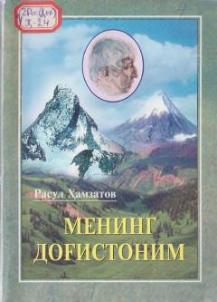

MDRasul Hamzatovning Dog'iston va avar xalqiga bag'ishlangan sevimli nasriy asari.
Bu kitob mashhur avar shoiri Rasul Hamzatovning birinchi nasriy asari bo'lib, uning vatani Dog'iston, avar xalqining urf-odatlari, hikmatli so'zlari va tabiati haqida so'z yuritadi. Asar avval rus tilida yozilgan bo'lib, keyinchalik ko'plab tillarga tarjima qilingan va millionlab nusxada chop etilgan. Ushbu nashr kitobning o'zbek tilidagi birinchi to'liq tarjimasi bo'lib, 2008-yilda Alisher Navoiy nomidagi O'zbekiston Milliy kutubxonasi nashriyoti tomonidan chiqarilgan.